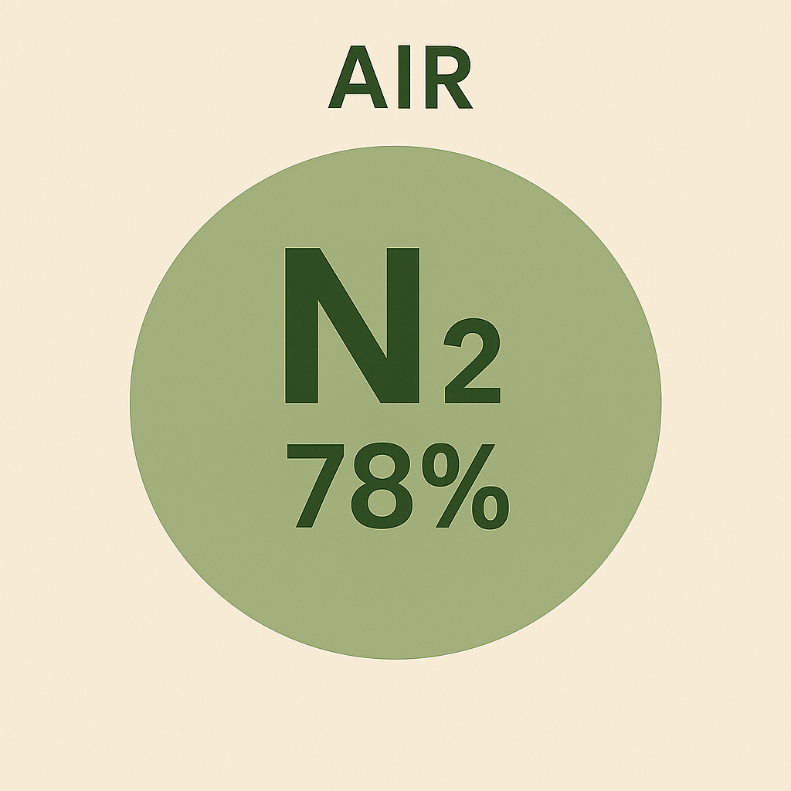
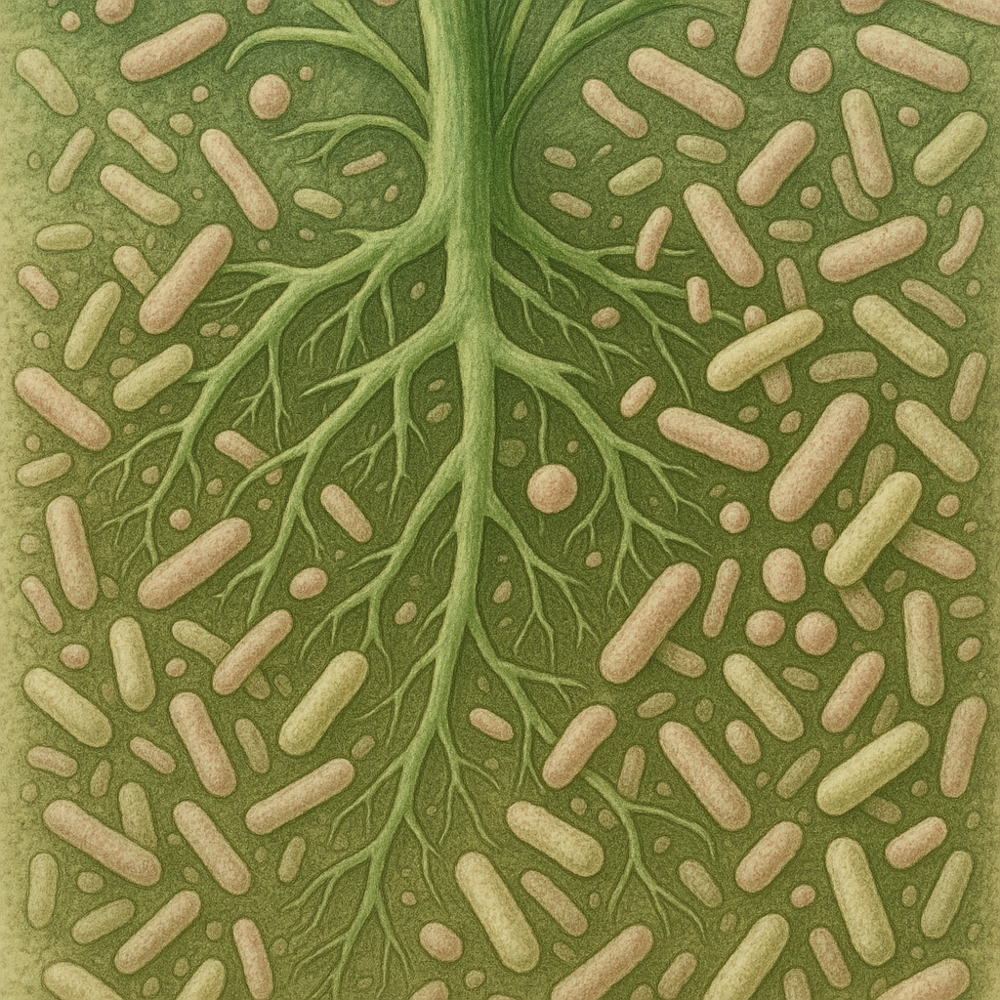
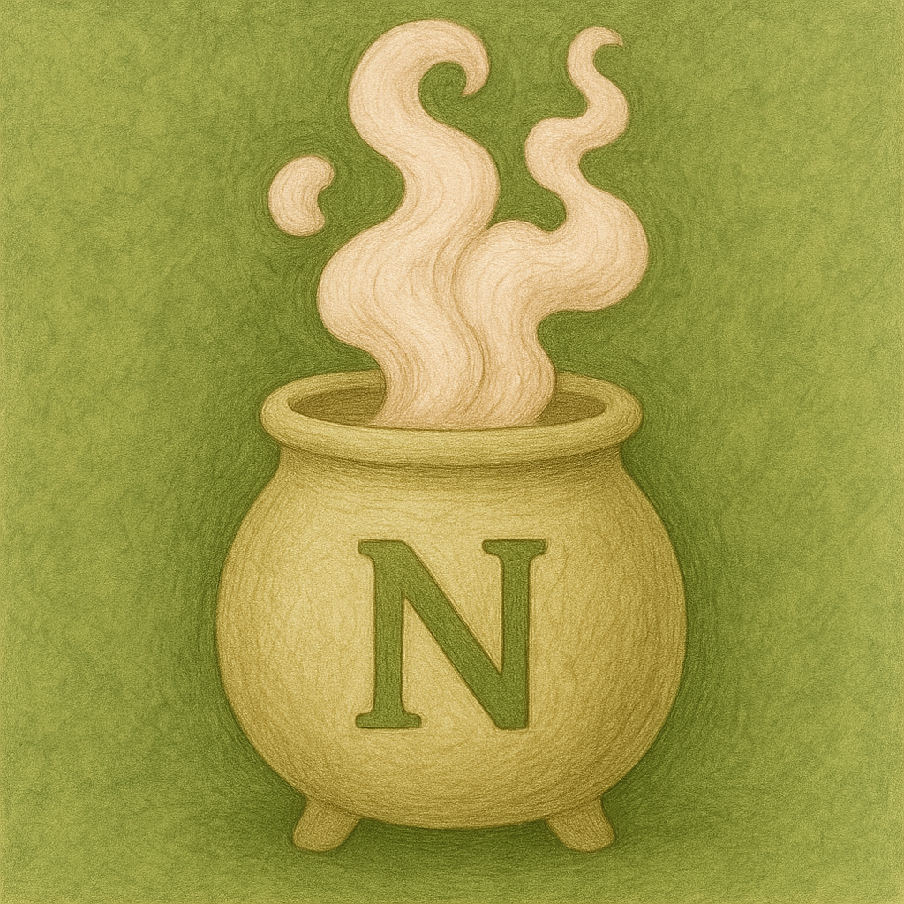
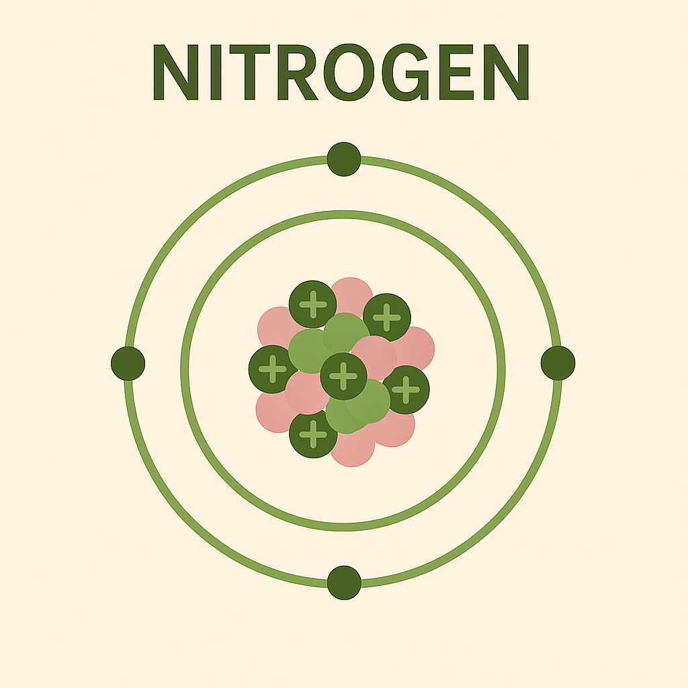
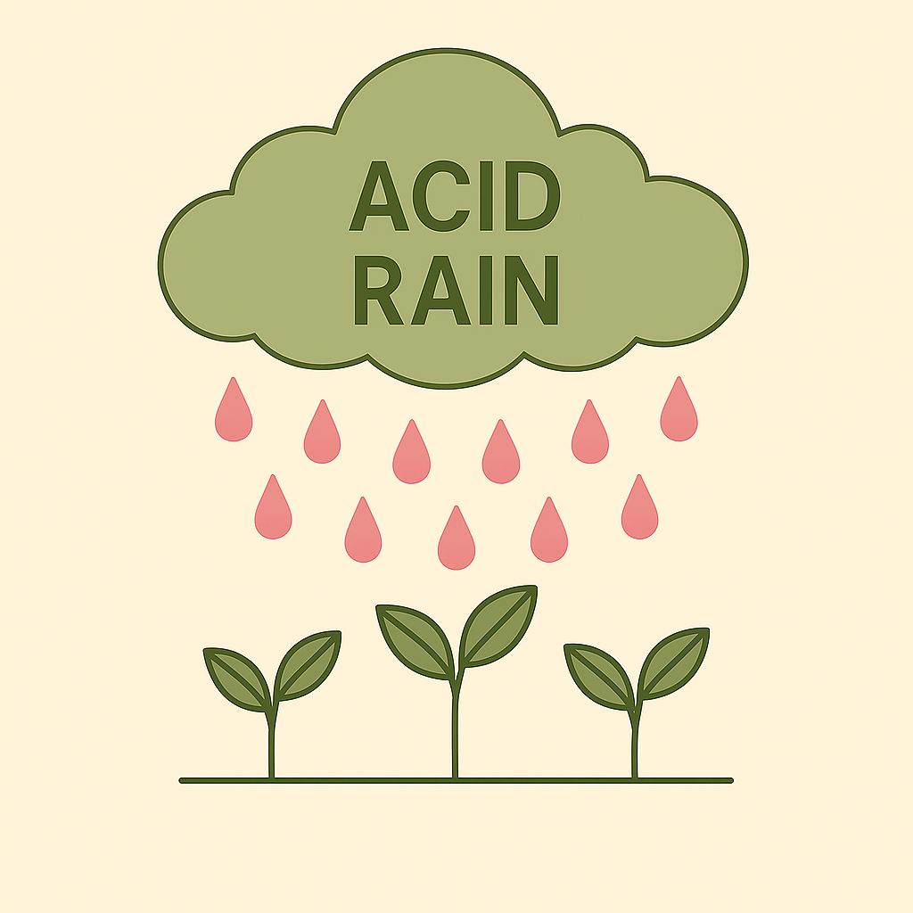
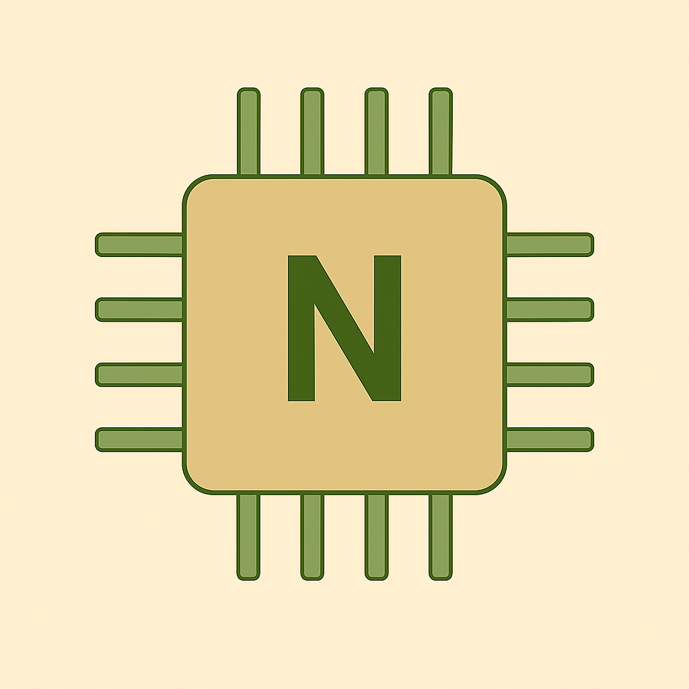
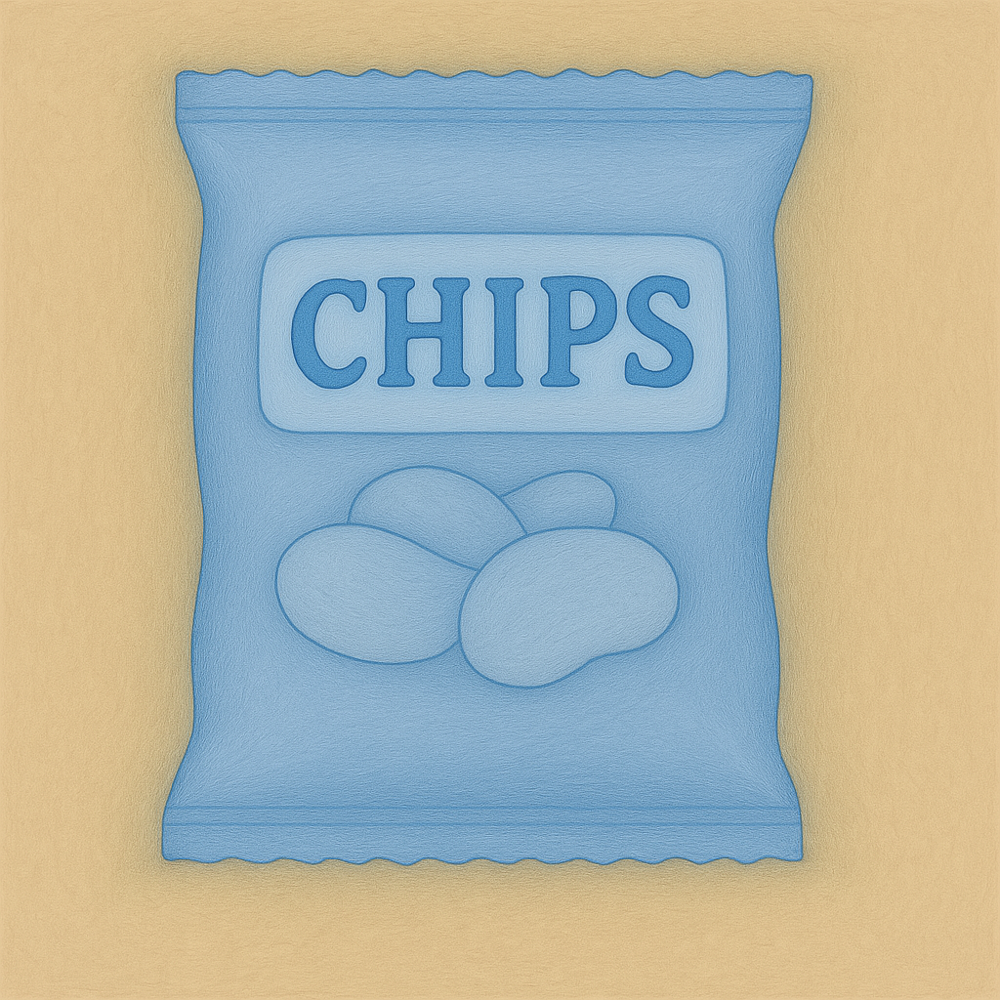
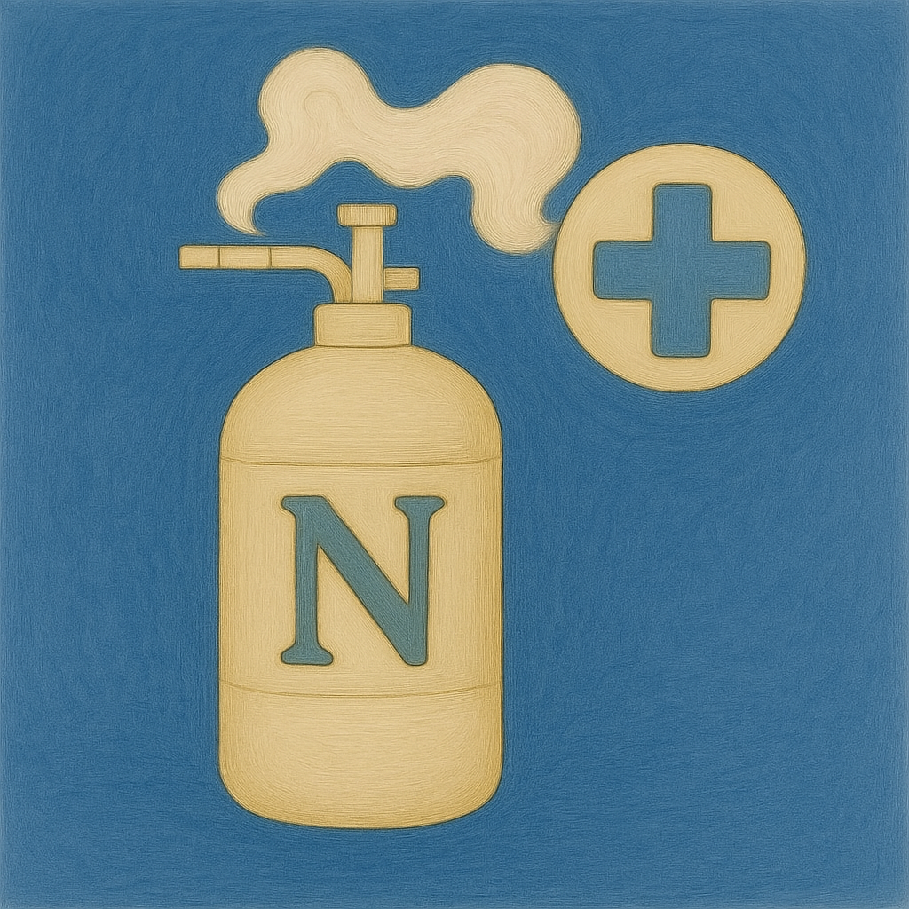
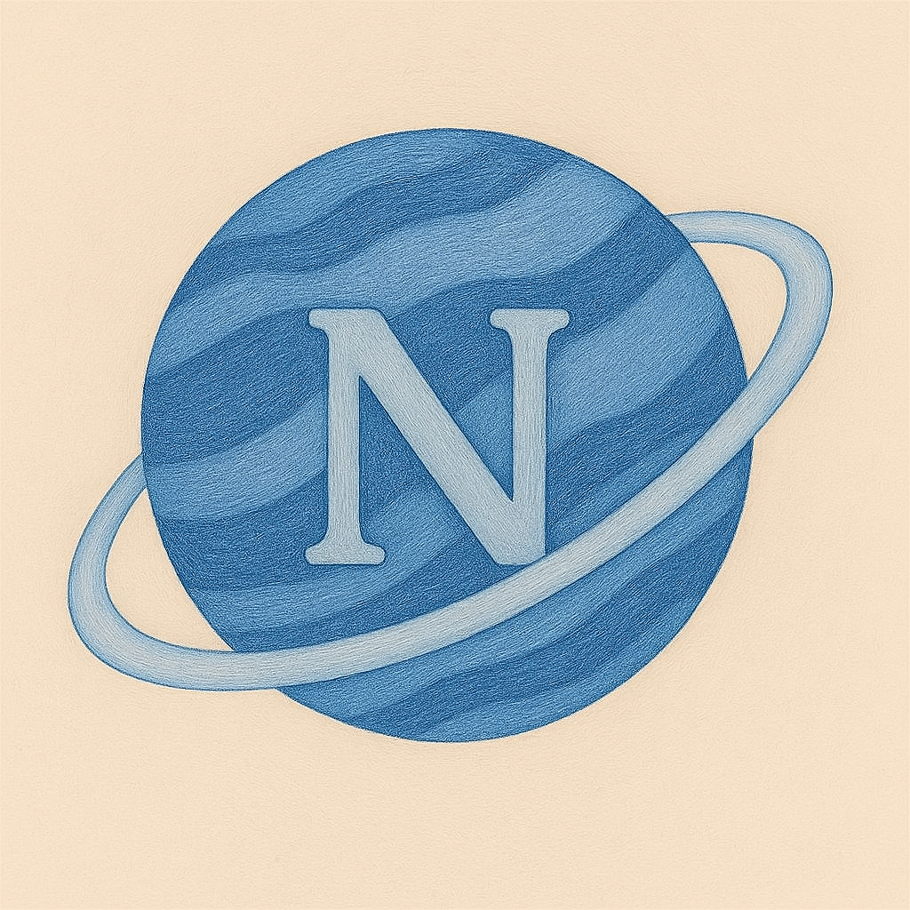
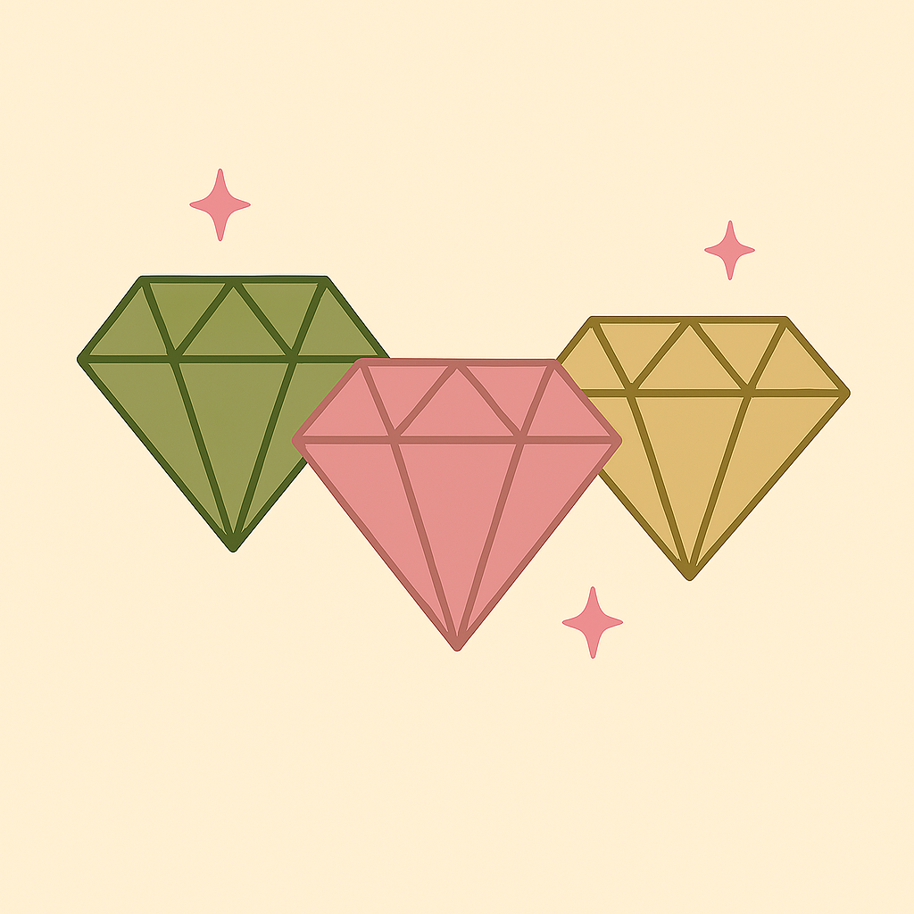

Curiosidades sobre el Nitrógeno
🌍 Presencia Natural y Descubrimiento

1. ¡Está en todas partes!
El nitrógeno representa aproximadamente el 78% del aire que respiramos. Aunque no lo notamos directamente, cada bocanada de aire que tomamos está repleta de este gas invisible e inerte.
2. Tiene muchos nombres históricos
Antes de llamarse “nitrógeno”, se conocía como “aire quemado” porque no podía mantener la combustión. También se le llamó "azote", que significa literalmente “sin vida”, ya que no permitía la supervivencia de animales cuando estaba en concentraciones puras.
🧬 Rol en la Vida y la Naturaleza
3. Es esencial para la vida
El nitrógeno es un componente vital del ADN, el ARN y las proteínas. Sin él, no existirían las estructuras fundamentales de los seres vivos. Cada célula de nuestro cuerpo depende del nitrógeno para funcionar.

4. Las plantas lo “comen” gracias a bacterias
Aunque el aire está lleno de nitrógeno, las plantas no pueden absorberlo directamente. Dependen de bacterias que viven en el suelo (y en raíces de algunas plantas como leguminosas) para convertir el nitrógeno atmosférico en formas que sí pueden utilizar.
⚠️ Propiedades y Riesgos

5. El nitrógeno líquido es ultrafrío
En estado líquido, el nitrógeno alcanza una temperatura de -196 °C, lo que lo convierte en uno de los refrigerantes más potentes disponibles. Es tan frío que puede congelar objetos en segundos.
6. También puede ser peligroso
En espacios cerrados, el nitrógeno puede desplazar al oxígeno sin que lo notemos, provocando asfixia silenciosa. Por eso su manejo requiere precaución en laboratorios e industrias.
7. Puede hacer que las cosas “crujan” de frío
Cuando se sumerge un objeto en nitrógeno líquido, este pierde su flexibilidad y se vuelve quebradizo, al punto de romperse con un simple golpe. Esto se ha usado incluso como truco en shows de ciencia.
💥 Usos Explosivos y Ambientales

8. Forma parte de los explosivos
El nitrógeno se encuentra en compuestos altamente explosivos, como el TNT o la nitroglicerina. Su capacidad de formar enlaces energéticos lo convierte en un ingrediente clave en la industria militar y minera.

9. Parte de la lluvia ácida
Los óxidos de nitrógeno (NOx) que se liberan por la quema de combustibles fósiles reaccionan en la atmósfera y contribuyen a la formación de lluvia ácida, afectando bosques, suelos y cuerpos de agua.
10. Forma parte de los fuegos artificiales
Algunos compuestos nitrogenados se usan en la pirotecnia, ya que al descomponerse liberan gases y energía, creando las explosiones de colores y formas que vemos en los fuegos artificiales.
⚙️ Aplicaciones Tecnológicas

11. Usado en chips y componentes electrónicos
El nitrógeno, por ser un gas inerte, se emplea en la fabricación de microchips y circuitos para evitar reacciones químicas no deseadas durante los procesos de producción.
12. Usado para inflar llantas de aviones y autos de carrera
El nitrógeno se usa para inflar llantas de aviones y vehículos de carreras porque mantiene una presión más estable que el aire común, no se expande tanto con el calor y reduce la oxidación de las llantas desde adentro.

13. Usado en empaques de alimentos
Muchos snacks vienen en bolsas infladas con nitrógeno. Este gas evita la oxidación de los alimentos, manteniéndolos frescos por más tiempo sin alterar su sabor ni textura.
☕🍺 Usos Gastronómicos
14. Importante para la cerveza y el café
El nitrógeno se usa para dar una textura cremosa y suave a algunas bebidas, como la cerveza tipo stout o el café cold brew nitro. Produce burbujas más pequeñas que el dióxido de carbono.

15. Se usa en medicina y gastronomía
El nitrógeno líquido se emplea para congelar tejidos humanos en criocirugía y también en la gastronomía molecular para crear postres humeantes o helados instantáneos con gran espectáculo visual.
🪐 Presencia Extraterrestre y Curiosidades

16. El nitrógeno está en otros planetas
Titán, la luna más grande de Saturno, posee una atmósfera rica en nitrógeno, lo que la convierte en uno de los pocos lugares del sistema solar con similitudes atmosféricas con la Tierra.

17. ¡El nitrógeno también está en los diamantes!
Algunas impurezas de nitrógeno dentro de los diamantes pueden alterar su color, haciéndolos amarillentos o marrones. Estas características incluso se usan para clasificar los tipos de diamantes.